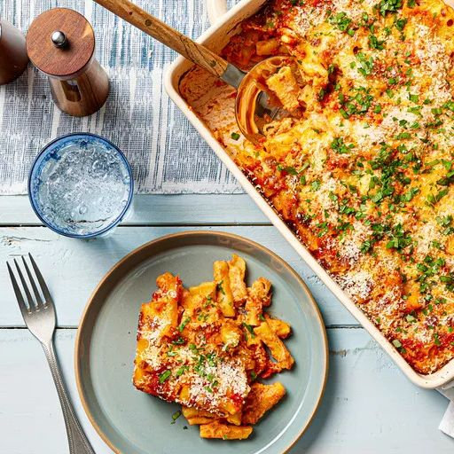

Baked Ziti

Description
Baked ziti is the dish I make at the annual ski retreat that my friends
and I take each year in New England. There are few pasta bakes that are
easier to put together yet produce such ridiculously good results,
particularly when it's snowing outside and you've got a whole cabinful of
friends to feed. - J. Kenji López-Alt
Source:
The Food Lab's No-Boil Baked Ziti Recipe
from Serious Eats
Ingredients
- 1 pound (454g) ziti, penne, or other thick tubular pasta
- 4 cups (950ml) homemade or high-quality store-bought red sauce (such
as Rao's), divided
- 12 ounces (340g) whole-milk homemade or high-quality ricotta
cheese
- 3 ounces (85g) Parmigiano-Reggiano, finely grated and divided (about 1
1/2 cups)
- 2 large eggs, beaten
- 1 cup (240ml) heavy cream
- 3 tablespoons minced fresh flat-leaf parsley, divided
- 3 tablespoons minced fresh basil, divided
- Kosher salt and freshly ground black pepper
- 1 pound (454g) whole-milk mozzarella cheese, cut into rough 1/4-inch
cubes and divided
- Cooking spray
Steps>
-
Adjust an oven rack to the middle position and preheat the oven to
400°F (200°C). Place ziti in a large bowl and cover with hot salted
water by 3 or 4 inches. Let sit at room temperature for 30 minutes,
stirring after the first 5 minutes to prevent sticking. Drain.
-
Pour 3 cups of the red sauce into a large pot; add ricotta, half of
the Parmigiano, eggs, cream, and half of the parsley and basil, and stir
to combine. Season to taste with salt and pepper. Add the soaked ziti
along with half of the mozzarella cheese cubes and stir until well
combined. Transfer to an ungreased 9- by 13-inch baking dish and top
with the remaining 1 cup red sauce and mozzarella.
-
Lightly grease aluminum foil with cooking spray. Cover the baking dish
tightly with the sprayed aluminum foil and bake for 45 minutes. Remove
foil and bake until the cheese beginsto brown, about 15 minutes longer.
Remove from oven and sprinkle with remaining Parmigiano, then let cool
for 10 minutes. Sprinkle with remaining parsley and basil and
serve.